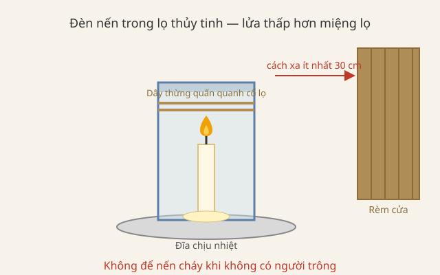

Tận dụng lọ thủy tinh cũ làm đèn nến trang trí
Tác giả: Ruler
Lọ thủy tinh đựng mứt, dưa muối hay sốt cà chua sau khi dùng hết thường chỉ chờ bỏ vào thùng tái chế. Nhưng nếu chiếc lọ dày, lành lặn và miệng đủ rộng, nó có thể thành đèn nến để bàn: ánh nến hắt qua lớp kính trong, đặt trên bàn ăn hay kệ thấp, làm góc phòng ấm lên mà không cần mua thêm đồ mới. Phần khó nằm ở chọn lọ và giữ an toàn cho ngọn lửa, vì đây là nến thật, có lửa thật.
Bài này chỉ nói về nến thật đặt trong lọ thủy tinh. Còn đèn giấy chạy dây LED thì bạn xem ở bài “Tự làm đèn ngủ giấy và dây LED cho phòng ngủ nhỏ”. Nếu nhà có trẻ nhỏ hay vật nuôi hiếu động, hoặc bạn muốn đèn để sáng mà không cần trông, hãy xem bài đó thay vì làm đèn nến thật.
Chọn lọ thủy tinh nào dùng được, lọ nào nên bỏ
Lọ dùng được là lọ có thành dày và đều, đáy phẳng, miệng rộng bằng hoặc gần bằng đáy. Lọ đựng mứt, dưa muối hay sốt cà chua thường thuộc nhóm này. Lọ mason và lọ jelly được nhiều hướng dẫn làm nến nhắc tới vì chúng được sản xuất để chịu nhiệt khi đóng hộp. Một hướng dẫn về vật chứa nến an toàn nêu rõ lọ mason chịu được nhiệt độ đóng hộp khoảng 250 độ F, tương đương khoảng 121 độ C. Nguyên tắc chung: lọ càng giống lọ đóng hộp thực phẩm thì càng hợp.
Lọ nên bỏ là lọ đã nứt hay mẻ, dù vết nứt chỉ nhỏ như sợi tóc, vì vết nứt có thể lan ra khi lọ nóng lên, làm sáp nóng chảy ra ngoài. Bạn cũng nên bỏ lọ có thành mỏng tới mức bóp nhẹ bằng tay đã thấy cong, lọ trang trí mỏng chỉ để đựng đồ khô, và ly rượu chân cao vì vừa mỏng vừa dễ đổ. Lọ cổ hẹp đáy rộng cũng không hợp: nhiệt tập trung ở cổ hẹp nên lọ dễ nứt hơn lọ thành thẳng, miệng rộng. Tuyệt đối không dùng lọ nhựa hay hộp nhựa, vì sáp nóng làm nhựa chảy ra. Thử bằng nước nóng: đổ nước nóng vào lọ, nếu kính nứt thì chắc chắn nó sẽ nứt vì lửa nến. Đổ nước nóng từ từ và cầm chắc lọ, vì nước nóng bắn ra có thể làm bỏng tay; nước quá nóng đổ đột ngột vào lọ lạnh cũng có thể làm kính nứt vì sốc nhiệt, nên chỉ dùng nước vừa nóng, không dùng nước sôi. Lọ cũng phải đứng vững khi chạm nhẹ, vì khi đã có lửa thì không còn cơ hội chỉnh lại.
| Dấu hiệu của lọ | Kết luận |
|---|---|
| Thành dày, đều, đáy phẳng, miệng rộng | Dùng được, kiểm tra thêm vết nứt |
| Lọ mason, lọ jelly, lọ mứt, dưa muối, sốt cà chua lành lặn | Dùng được |
| Nứt hay mẻ, dù vết nứt rất nhỏ | Bỏ |
| Thành mỏng, bóp nhẹ bằng tay đã thấy cong | Bỏ |
| Cổ hẹp, đáy rộng; ly rượu chân cao | Bỏ |
| Lọ nhựa hay hộp nhựa | Bỏ |
| Đổ nước nóng vào thấy nứt | Bỏ ngay |
Làm sạch và khử mùi lọ cũ
Lọ cũ trước hết phải sạch. Lọ bẩn làm nến cháy không đều và bốc mùi khi đốt, theo một hướng dẫn làm nến trong lọ thủy tinh. Bạn chỉ cần rửa lọ bằng nước nóng và nước rửa chén, tráng sạch rồi để khô hoàn toàn. Nhãn giấy thường tốn thời gian nhất: ngâm lọ trong nước ấm pha vài giọt nước rửa chén khoảng 20 phút rồi gỡ nhãn; keo dính còn sót lau bằng cồn tẩy rửa thấm vào khăn vải. Bạn không nên dùng dao kim loại hay miếng cọ sắt để cạo kính, vì vết xước kim loại vừa làm lọ xấu đi, vừa tạo điểm yếu trên mặt kính.
Mùi của lọ cũ sẽ rõ hơn khi lọ ấm lên vì ngọn nến. Lọ đựng dưa muối hay mứt thường hết mùi sau khi rửa sạch rồi úp ngược cho khô hẳn ở nơi thoáng. Ngửi thử lọ sau khi khô: mùi thoang thoảng thì dùng được, mùi nặng — mùi mắm, gia vị cay nồng hay hóa chất lạ — thì đừng dùng lọ đó. Trước khi đặt nến vào, đổ nước đầy vào lọ, để một lúc rồi xem nước có rỉ ra ở đáy không, vì sáp chảy đọng ở đáy lọ nên đáy rỉ nước thì sáp nóng cũng rỉ ra theo đường đó. Lọ thử xong úp ngược cho khô hẳn mới đặt nến vào, vì lọ ẩm làm đế nến trơn, nến dễ nghiêng.
Checklist làm sạch lọ cũ — làm đủ 5 bước rồi mới đặt nến:
- Ngâm lọ trong nước ấm pha nước rửa chén khoảng 20 phút, gỡ nhãn giấy.
- Lau keo dính bằng cồn tẩy rửa, không cạo bằng dao kim loại.
- Rửa lại bằng nước nóng và nước rửa chén, tráng sạch.
- Ngửi thử sau khi khô: còn mùi nặng thì bỏ lọ, chọn lọ khác.
- Đổ nước đầy vào lọ để thử rò rỉ, rồi úp ngược cho khô hẳn.
Các kiểu đèn nến trong lọ
Đèn nến trong lọ thường làm theo ba kiểu dưới đây, đều giữ chung một quy tắc: ngọn lửa thấp hơn miệng lọ, nến đứng vững ngay từ lúc chưa châm lửa.
Kiểu thứ nhất là nến cây đặt trong lọ cao. Đặt một cây nến cây mua sẵn vào lọ cao có miệng rộng, trên một chiếc đĩa nến nhỏ bằng kim loại hoặc sứ để hứng sáp và giữ nến đứng thẳng. Chọn cây nến ngắn hơn chiều cao của lọ, để ngọn lửa vẫn thấp hơn miệng lọ. Trước khi châm lửa, cắt ngắn bấc nến còn khoảng 6 mm, tức khoảng 1/4 inch — con số mà NFPA và một hướng dẫn về đèn lồng lọ tự làm đều nêu: bấc quá dài làm lửa to và cháy không đều.

Kiểu thứ hai là nến tealight đặt trong lọ thấp. Nến tealight vốn đã có sẵn cốc kim loại ôm quanh thân nến, nên bạn chỉ cần đặt nguyên viên nến xuống đáy lọ, không cần thêm đế. Mỗi lọ chỉ một viên, không xếp chồng hai viên lên nhau; cháy gần hết thì thay viên mới.
Kiểu thứ ba là bộ ba lọ thấp đặt thành hàng trên một chiếc khay. Ba chiếc lọ thấp cùng cỡ, mỗi lọ một viên nến tealight, đặt thẳng hàng trên khay kim loại hoặc đĩa sứ chịu nhiệt. Khay hứng sáp nếu sáp tràn ra. Đặt ba lọ cách nhau đủ xa để tay bạn với tới từng lọ. Kiểu này hợp với bàn ăn dài, kệ ti vi thấp hay bệ cửa sổ rộng. Không nên làm bộ năm hay bộ bảy lọ, vì càng nhiều lửa càng khó trông chừng.
Dù làm kiểu nào, nhớ hai giới hạn: không đốt tới sát đáy lọ — dừng khi còn khoảng 1 đến 1,5 cm sáp ở đáy lọ theo hướng dẫn của ThatPainter; và không đậy nắp khi đốt, vì nắp giữ nhiệt lại trong lọ. Đun sáp nóng chảy có rủi ro bỏng, vì vậy muốn tự đổ nến thì mua sáp làm sẵn theo hướng dẫn của nhà sản xuất.
| Kiểu đèn | Nến dùng | Hợp đặt ở |
|---|---|---|
| Nến cây trong lọ cao | Nến cây mua sẵn, ngắn hơn lọ, đặt trên đĩa nến kim loại | Bàn ăn, kệ thấp |
| Nến tealight trong lọ thấp | Một viên nến tealight có sẵn cốc kim loại, đặt thẳng đáy lọ | Bàn ăn, kệ thấp, bàn làm việc buổi tối |
| Bộ ba lọ thấp trên khay | Ba viên nến tealight, mỗi lọ một viên, đặt trên khay chịu nhiệt | Bàn ăn dài, kệ ti vi thấp, bệ cửa sổ rộng |
Trang trí ngoài lọ
Chỉ trang trí mặt ngoài của lọ, ở nửa dưới thân lọ, xa miệng lọ và xa ngọn lửa. Thứ gì ở gần miệng lọ đều có thể chạm vào ngọn lửa, còn thứ gì ở nửa dưới thân lọ thì ngọn lửa không với tới. Quấn một vòng dây thừng hay dây cói quanh cổ lọ — một hướng dẫn làm nến trong lọ thủy tinh cũng gợi ý cách này. Bạn cũng có thể sơn mặt ngoài thân lọ, hoặc dán vải bố, ren hay hoa khô ép ở mặt ngoài nửa dưới — không dán vào mặt trong lọ hay gần miệng lọ.
Có những cách trang trí bạn nên tránh hẳn. Không dán giấy, vải hay lá khô ở gần miệng lọ, không sơn mặt trong của lọ. Không treo đồ trang trí lủng lẳng qua miệng lọ, vì đồ treo có thể đung đưa chạm vào ngọn lửa. Không đặt đồ trang trí nào vào bên trong lọ cùng với cây nến đang cháy: lá khô, cánh hoa khô hay sợi vải trong lọ đều là nhiên liệu.
An toàn cháy là phần quan trọng nhất của bài viết này
Phần này phải đọc trước khi bạn châm lửa lần đầu. Các quy tắc dưới đây lấy từ hướng dẫn an toàn nến của NFPA và các hướng dẫn đã dẫn cuối bài. Một chiếc đèn nến chỉ an toàn khi mọi quy tắc đều được giữ cùng lúc.
Thứ nhất, chỉ dùng lọ thủy tinh dày, chịu nhiệt, không nứt mẻ. Không dùng lọ nhựa hay lọ thủy tinh mỏng, không dùng lọ đã nứt dù vết nứt rất nhỏ. Lọ thủy tinh chỉ là vật chứa, không phải chứng nhận an toàn: nếu lọ đổ, sáp nóng và ngọn lửa sẽ tràn ra ngoài lọ. Thứ hai, nến đặt vững trong lọ, ngọn lửa thấp hơn miệng lọ: chọn nến ngắn hơn lọ, cắt bấc còn khoảng 6 mm trước khi đốt, chỉ đặt một cây nến trong một lọ. Kính nóng tới mức không cầm được thì tắt nến ngay: đó là dấu hiệu bấc quá lớn hoặc lọ quá nhỏ.
Thứ ba, không để nến cháy khi không có người trông. NFPA khuyên không bao giờ để nến đang cháy mà không có người trông, và dập tắt mọi cây nến khi ra khỏi phòng hay khi đi ngủ. Quy tắc này không có ngoại lệ cho nến trong lọ. NFPA cũng khuyên tránh dùng nến ở phòng ngủ và những nơi người ta có thể ngủ gật. Nến trong lọ chỉ hợp với lúc bạn còn thức.
Thứ tư, để đèn nến xa rèm, vải, giấy và đồ dễ cháy ít nhất một foot, tức khoảng 30 cm, tính từ ngọn lửa tới thứ gần nhất có thể cháy. Rèm cửa, chồng sách, hộp giấy và quần áo treo gần đó đều phải nằm ngoài khoảng này. Tránh nơi có gió lùa, vì gió làm ngọn lửa chao qua lại và hơ nóng một phía thành lọ. Thứ năm, đặt đèn nến trên mặt phẳng chịu nhiệt, vững chắc, có lót đĩa sứ hay khay kim loại dưới lọ để hứng sáp. Không đặt trên chồng sách, khăn vải hay mặt nghiêng, vì lọ có thể trượt hay đổ.
Thứ sáu, tắt nến trước khi đi ngủ hay ra khỏi nhà, và để lọ nguội hẳn mới chạm vào. Tắt nến bằng dụng cụ chụp nến. Không đổ nước vào lọ nến đang cháy: nước làm sáp nóng bắn tung tóe, nước lạnh gặp kính nóng có thể làm lọ nứt. Sau khi tắt, nhìn lại bấc nến một lần nữa để chắc lửa đã tắt hẳn. Thứ bảy, giữ đèn nến xa tầm tay trẻ nhỏ và vật nuôi, và cất diêm, bật lửa ở nơi trẻ không với tới. Nhà có trẻ nhỏ hay mèo hay nhảy lên bàn thì đặt đèn ở kệ cao trong tầm mắt người lớn, hoặc dùng đèn không lửa ở bài “Tự làm đèn ngủ giấy và dây LED cho phòng ngủ nhỏ”.
Cuối cùng, đừng đốt một cây nến quá lâu trong một lần. NFPA nêu nguyên tắc chung là không nên đốt nến quá bốn giờ liên tục, và nên để nến nguội ít nhất hai giờ trước khi đốt lại — bạn cũng nên đọc hướng dẫn của chính cây nến bạn mua. Đốt quá lâu làm lọ nóng lên nhiều hơn, sáp cạn dần và ngọn lửa cháy không ổn định. Cần ánh sáng cả buổi tối dài thì tắt nến nghỉ một lúc rồi đốt lại sau.
Checklist an toàn trước khi châm lửa — kiểm tra đủ 7 dòng rồi mới đốt:
- Lọ dày, không nứt mẻ; không phải lọ nhựa hay thủy tinh mỏng.
- Nến đứng vững, ngọn lửa thấp hơn miệng lọ, bấc đã cắt còn khoảng 6 mm.
- Đèn đặt trên mặt phẳng chịu nhiệt, có đĩa hay khay lót dưới lọ.
- Xung quanh đèn, trong khoảng 30 cm, không có rèm, vải, giấy hay đồ dễ cháy.
- Có người trông chừng, không đốt nến khi sắp đi ngủ hay sắp ra khỏi nhà.
- Trẻ nhỏ, vật nuôi, tóc và quần áo rộng không với tới đèn.
- Đã biết cách tắt nến: dùng dụng cụ chụp nến, không đổ nước vào lọ.
Đặt đèn ở đâu trong nhà nhỏ
Đèn nến trong lọ hợp nhất với những chỗ bạn ngồi lại lâu và còn thức: bàn ăn trong bữa tối, kệ thấp ở phòng khách, hay bệ cửa sổ rộng trong nhà khi cửa sổ đã đóng. Ngoài trời, đèn có thể đặt ở ban công có mái chắn gió, trên khay chịu nhiệt, có người ngồi cùng. Quy tắc chung: chỗ nào bạn ngồi yên và nhìn thấy đèn thì đặt được, chỗ nào bạn đi qua, ngủ gật hay để trẻ nhỏ chơi một mình thì không đặt.
| Đặt được | Không nên đặt |
|---|---|
| Bàn ăn khi cả nhà đang ngồi ăn | Phòng ngủ khi sắp đi ngủ |
| Kệ thấp ở phòng khách | Trên sàn nhà hay ngay trên đầu giường |
| Bệ cửa sổ trong nhà, cửa sổ đã đóng | Cạnh rèm cửa, chồng sách, quần áo treo |
| Ban công có mái chắn gió, có người ngồi cùng | Lối đi hẹp, nóc ti vi |
Kết luận
Món này không khó ở bước trang trí, mà khó ở bước chọn lọ và giữ an toàn cho ngọn lửa. Bạn chỉ cần nhớ ba việc: chọn lọ thủy tinh dày, chịu nhiệt và không nứt mẻ; đặt nến cho vững sao cho ngọn lửa luôn thấp hơn miệng lọ; và không bao giờ để nến cháy mà không có người trông. Làm được ba việc đó, bạn sẽ yên tâm mỗi lần châm lửa. Nếu bạn cần ánh sáng dịu mà không phải trông lửa — chẳng hạn nhà có trẻ nhỏ hay vật nuôi mà bạn không giữ chúng xa đèn được, hay bạn cần sáng cả đêm — đèn giấy chạy dây LED ở bài “Tự làm đèn ngủ giấy và dây LED cho phòng ngủ nhỏ” hợp hơn.
Nguồn tham khảo
- The Cool Crafts, "Upcycle Glass Jars Into Candle Holders" — dùng cho cách chọn lọ (lọ mason và lọ jelly chịu nhiệt nhờ quá trình đóng hộp; lọ cổ hẹp đáy rộng tập trung nhiệt nên dễ nứt; không dùng lọ nhựa), cách làm sạch (ngâm nước ấm pha nước rửa chén khoảng 20 phút, lau keo dính bằng cồn tẩy rửa, không cạo kính bằng dao kim loại), cách thử lọ bằng nước nóng, cách trang trí ngoài lọ (quấn dây thừng quanh cổ lọ), quy tắc không đậy nắp khi đốt và dấu hiệu kính quá nóng phải tắt nến (truy cập 23/11/2026): https://www.thecoolcrafts.com/hacks/upcycle-glass-jars-into-candle-holders
- Life-n-Reflection, "Safe Candle Containers for Candle Making and What to Avoid" — dùng cho tiêu chuẩn lọ an toàn (lọ phải dày, nhẵn, chịu nhiệt; lọ mason chịu được nhiệt độ đóng hộp khoảng 250 độ F, tương đương khoảng 121 độ C; tránh ly rượu chân cao vì dễ đổ và dễ nứt), cách thử rò rỉ bằng cách đổ nước đầy vào lọ, và quy tắc không bao giờ để nến cháy mà không có người trông (truy cập 23/11/2026): https://www.lifenreflection.com/safe-candle-containers-for-candle-making/
- ThatPainter, "Homemade Jar Lantern Safety: Candles vs. Flameless LEDs" — dùng cho khoảng cách an toàn 12 inch (30 cm) với đồ dễ cháy, cách cắt bấc còn khoảng 5–7 mm, quy tắc dừng đốt khi còn khoảng 1–1,5 cm sáp ở đáy lọ, cảnh báo lọ thủy tinh chỉ là vật chứa chứ không phải chứng nhận an toàn, và cách tắt nến (không đổ nước vào nến đang cháy; để lọ nguội hẳn mới chạm vào) (truy cập 23/11/2026): https://thatpainter.com/safe-ways-to-use-homemade-jar-lanterns-with-candles-or-leds/
- National Fire Protection Association (NFPA), "Cook and use candles with caution on Valentine's Day" — dùng cho các quy tắc an toàn nến: giữ nến cách xa thứ dễ cháy ít nhất một foot (30 cm), không bao giờ để nến cháy mà không có người trông, dập tắt nến khi ra khỏi phòng hay khi đi ngủ, tránh dùng nến ở phòng ngủ, đặt đèn nến trên mặt phẳng vững chắc, cất diêm và nến xa tầm tay trẻ em (truy cập 23/11/2026): https://www.nfpa.org/about-nfpa/press-room/news-releases/2026/cook-and-use-candles-with-caution-on-valentines-day
- National Fire Protection Association (NFPA), "Educational Messages Desk Reference" (bản 2026) — dùng cho hai quy tắc: cắt bấc còn 1/4 inch (6 mm) trước khi đốt, và nguyên tắc chung không đốt nến quá bốn giờ liên tục, để nguội ít nhất hai giờ trước khi đốt lại (truy cập 23/11/2026): https://www.nfpa.org/-/media/project/storefront/catalog/files/home-fire-safety/EMAC/EducationalMessagesDeskReference.pdf